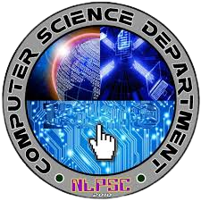

Noel Vincent Habon
San Tiburcio Salcedo Ilocos Sur
Course Overview
- At present, there are plethora of high-tech technologies along with software accessible which outline the certain way we all lead our lives. In your career as future technology pacesetter, you are likely to deal with much bigger and more complex computing systems.In view of that, we have to start somewhere, so in this module we will look at the big picture.
This course Applications Development and Emerging Technologies focuses on the development of applications using web, mobile, and emerging technologies with emphasis on requirements management, interface design, usability, testing, deployment, including ethical and legal considerations.
Course Learning Outcomes
As one of the students enrolled in this course, you are expected that at the end
of the semester you will be able to:
- develop specifications for a software development effort that precisely
articulate the functional requirements, and the explicit use of cutting edge or
emerging technologies;
- select and use a defined coding, documentation writing, and licensing
standards where coding idioms and mechanism for implementing designs to achieve
desired properties such as reliability, efficiency, and robustness are practiced with
respect to legal and ethical considerations; and
- undertake an inspection of the application and testing of the fundamental
units of a sufficiently complex software project.
To realize the above-mentioned learning outcomes, it requires you to have a
high level of responsibility, dedication and self-discipline. In this course, you
are responsible for your own work, progress, and grade in ways like studying your
modules diligently, accomplishing the activities and participating in whatever form
available, so that along the way, WE will be able to LEARN,together.